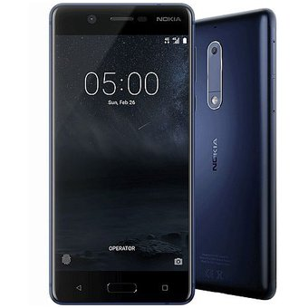

Celular Nokia 5 Azul Con Pantalla 5.2", 720 X 1280 Pixels
El Nokia 5 llega con una pantalla de 5.2 pulgadas, el que podríamos llamar estándar actual en teléfonos con Android.
Ligeramente por debajo de las 5.5 de su hermano mayor.
Aunque también en precio, el nivel se ha mantenido a nivel de diseño.
Están fabricados a partir de una pieza de aluminio de la serie 6000.